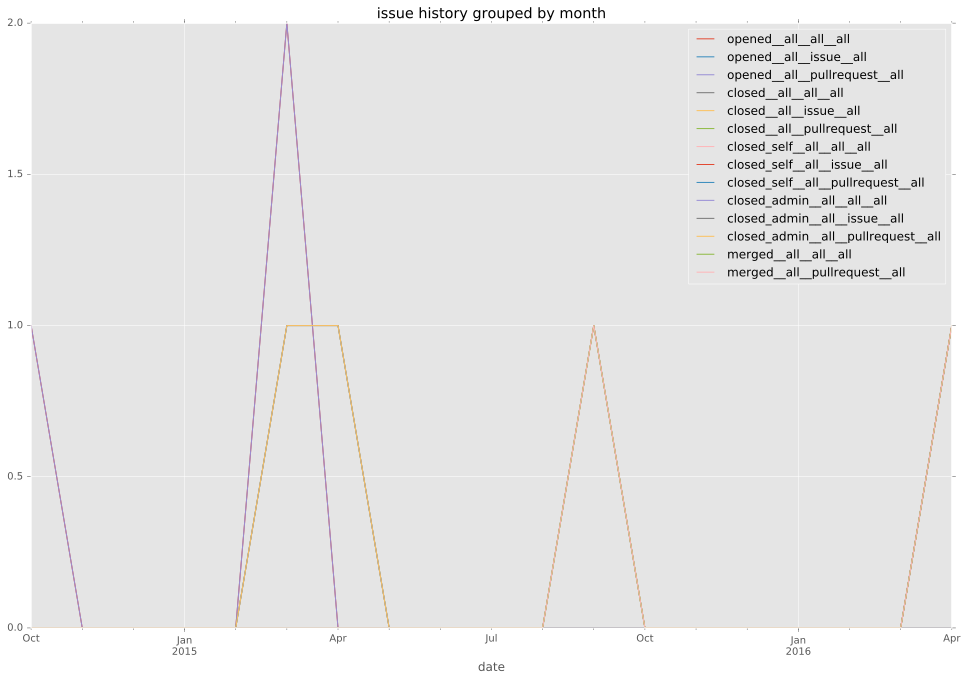
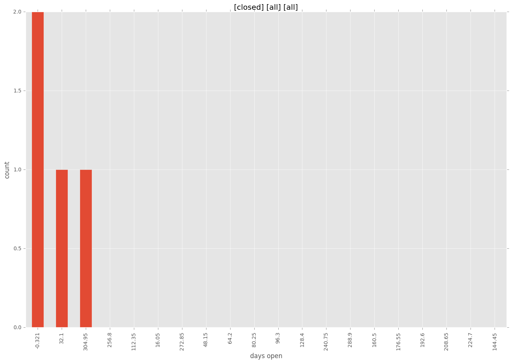
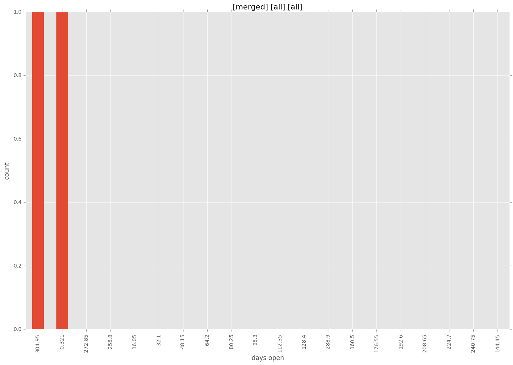
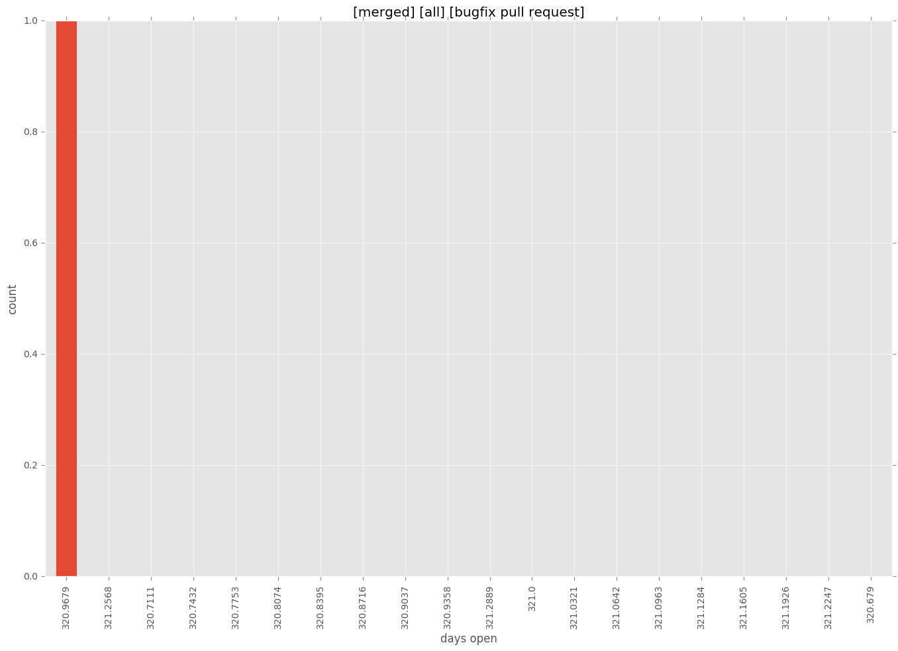
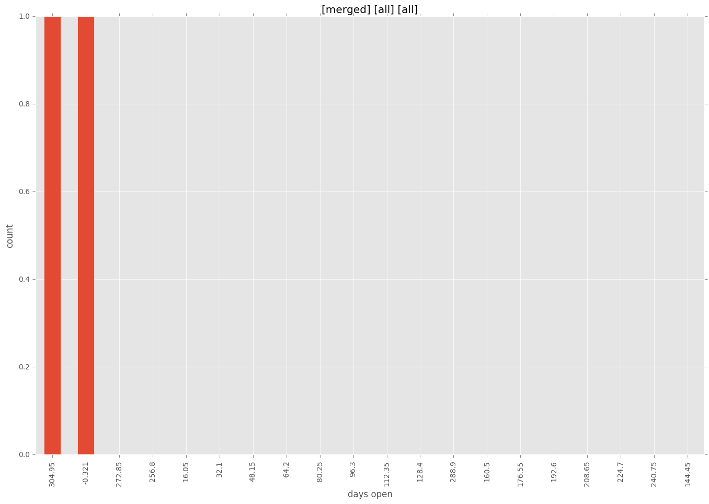
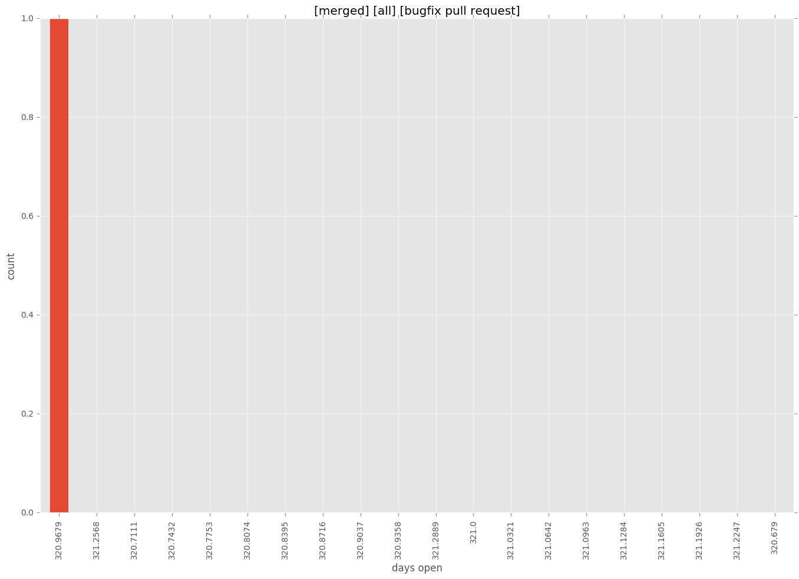

total issue counts
feature pull request: 2
bugfix pull request: 1
pullrequest: 4
docs pull request: 1
issue history

days open by issue type
feature pull request
count: 2
std: 25.4558441227
min: 0
max: 36
median: 18.0
mean: 18.0
bugfix pull request
count: 2
std: 0.0
min: 321
max: 321
median: 321.0
mean: 321.0
all
count: 6
std: 161.71827355
min: 0
max: 321
median: 18.0
mean: 113.0
pullrequest
count: 0
std: nan
min: nan
max: nan
median: nan
mean: nan
docs pull request
count: 2
std: 0.0
min: 0
max: 0
median: 0.0
mean: 0.0
closures grouped by total days open



 


